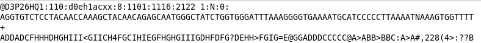
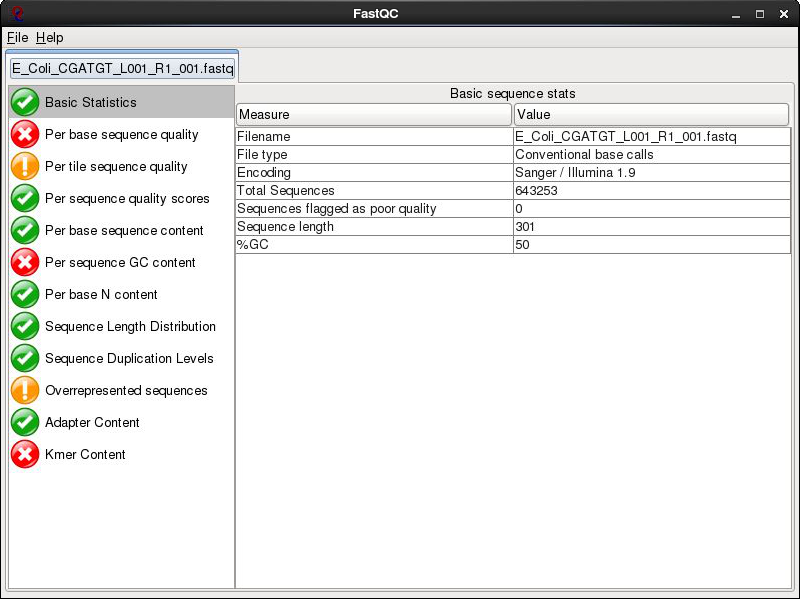
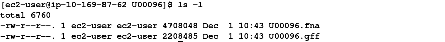
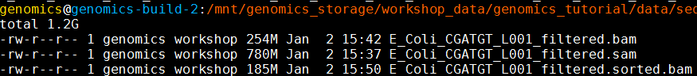

In this section of the workshop we will be analysing a strain of E.coli which was sequenced at Exeter. It is closely related to the K-12 substrain MG1655 (http://www.ncbi.nlm.nih.gov/nuccore/U00096). We want to obtain a list of single nucleotide polymorphisms (SNPs), insertions/deletions (Indels) and any genes which have been deleted.
Quality control
In this section of the workshop we will be learning about evaluating the quality of an Illumina MiSeq sequencing run. Sequencing data is usually delivered in FASTQ format and the process described here can be used with any FASTQ formatted file from any platform (e.g 454, Illumina, Ion Torrent, PacBio etc).
2nd (and 3rd) generation sequencers produce vast quantities of data. A single Illumina MiSeq lane will produce over 10-Gbases of data. However, the error rates of these platforms are 10-100x higher than Sanger sequencing. They also have very different error profiles. Unlike Sanger sequencing, where the most reliable sequences tend to be in the middle, NGS platforms tend to be most reliable near the beginning of each read.
Quality control usually involves:
Quality control is necessary because:
Quality scores
Most quality scores are calculated using the Phred scale (Ewing B, Green P: Basecalling of automated sequencer traces using phred. II. Error probabilities. Genome Research 8:186-194 (1998)).
Each base call has an associated base call quality which estimates chance that the base call is incorrect.
Q10 = 1 in 10 chance of incorrect base call
Q20 = 1 in 100 chance of incorrect base call
Q30 = 1 in 1000 chance of incorrect base call
Q40 = 1 in 10,000 chance of incorrect base call
For most 454, SoLID and Illumina runs you should see quality scores between Q20 and Q40. Note that these as only estimates of base-quality based on calibration runs performed by the manufacturer against a sample of known sequence with (typically) a GC content of 50%. Extreme GC biases and/or particular motifs or homopolymers can cause the quality scores to become unreliable. Accurate base qualities are an essential part in ensuring variant calls are correct. As a rough and ready rule we generally assume that with Illumina data anything less than Q20 is not useful data and should be excluded.
Once you understand the FASTQ format try to work out what is happing to the quality scores here and why - A FASTQ entry consists of 4 lines:

line 1 - A header line beginning with ‘@’ containing information about the name of the sequencer, and the position at which the originating cluster was
located and whether it passed purity filters.
line 2 - The DNA sequence of the read
line 3 - A header line or line beginning with just ‘+’
line 4 - Quality scores for each base encoded in ASCII format
To reduce storage requirements, the FASTQ quality scores are stored as single characters and converted to numbers by obtaining the ASCII quality score and subtracting either 33 (or 64 for much older datasets). For example, the above FASTQ file is Sanger formatted and the character ! has an ASCII value of 33. Therefore the corresponding base would have a Phred quality score of 33-33=Q0 (i.e. totally unreliable). On the other hand a base with a quality score denoted by @ has an ASCII value of 64 and would have a Phred quality score of 64-33=Q31 (i.e. less than 1/1000 chance of being incorrect).
Happily the community has pretty much standardized on base 33 encoding, but do be aware that older datasets may use a different offset for encoding.
The first task when one receives sequencing data is to evaluate its quality and determine whether all the cash you have handed over was well-spent! To do this we will use the FastQC toolkit (http://www.bioinformatics.bbsrc.ac.uk/projects/fastqc/). FastQC offers a graphical visualisation of QC metrics, but does not have the ability to filter data.
Task 1 From your home directory change into the workshop_materials/genomics_tutorial/data/sequencing/ecoli_exeter/ directory and list the directory contents. E.g.:
cd ~/workshop_materials/genomics_tutorial/data/sequencing/ecoli_exeter
ls -l
Note that this is a paired-end run. As such there are two files:
Reads from the same pair can be identified because they have the same header. Programs which use FASTQ files generally require that the read 1 and read 2 files have the reads in the same order. To view the first few headers we can use the head and grep commands:
head E_Coli_CGATGT_L001_R1_001.fastq | grep MISEQ
head E_Coli_CGATGT_L001_R2_001.fastq | grep MISEQ
The only difference in the headers for the two reads is the read number. Of course this is no guarantee that all the headers in the file are consistent. To get some more confidence repeat the above commands using ‘tail’ instead of ‘head’ to compare reads at the end of the files.
You can also check that there is an identical number of reads in each file using cat, grep and wc -l:
cat E_Coli_CGATGT_L001_R1_001.fastq | grep MISEQ | wc -l
cat E_Coli_CGATGT_L001_R2_001.fastq | grep MISEQ | wc -l
Task 2
Now, let’s start the fastqc program.
fastqc

Load the E_Coli_CGATGT_L001_R1_001.fastq file from the workshop_materials/genomics_tutorial/data/sequencing/ecoli_exeter directory.
After a few minutes the program should finish analysing the FASTQ file.

The fastqc program performs a number of tests which determines whether a green tick (pass), exclamation mark (warning) or red cross (fail) is displayed. However it is important to realise that fastqc has no knowledge of what your library is or should look like.
All of its tests are based on a completely random library with 50% GC content. Therefore if you have a sample which does not match these assumptions, it may ‘fail’ the library. For example, if you have a high AT or high GC organism it may fail the per sequence GC content. If you have any barcodes or low complexity libraries (e.g. small RNA libraries) they may also fail some of the sequence complexity tests.
The bottom line is that you need to be aware of what your library is and whether what fastqc is reporting makes sense for that type of library. In this case we have a number of errors and warnings which at first sight suggest there has been a problem - but don’t worry too much yet. Let’s go through them in turn.
Per Base Sequence Quality is one of the most important metrics. This view shows an overview of the range of quality values across all bases at each position in the FASTQ file. Generally anything with a median quality score greater than Q20 is regarded as acceptable; anything above Q30 is regarded as ‘good’. For more details, see the help documentation in fastqc.
In this case this check is red - and it is true that the quality drops off at the end of the reads. It is normal for read quality to get worse towards the end of the read. You can see that at 250 bases the quality is still very good, we will later trim off the low quality bases so reserve judgment for now.
Per tile sequence quality is a purely technical view on the sequencing run, it is more important for the team running the sequencer. The sequencing flowcell is divided up into areas called cells. You can see that the read quality drops off in some cells faster than others. This maybe because of the way the sample flowed over the flowcell or a mark or smear on the lens of the optics.
Per base sequence content For a completely randomly generated library with a GC content of 50% one expects that at any given position within a read there will be a 25% chance of finding an A, C, T or G base. Here we can see that our library satisfies these criteria, although there appears to be some minor bias at the beginning of the read. This may be due to PCR duplicates during amplification or during library preparation. It is unlikely that one will ever see a perfectly uniform distribution. See http://sequencing.exeter.ac.uk/guide-to-your-data/quality-control for examples of good vs bad runs as well as the fastqc help for more details.
Sequence Duplication Levels In a library that covers a whole genome uniformly most sequences will occur only once in the final set. A low level of duplication may indicate a very high level of coverage of the target sequence, but a high level of duplication is more likely to indicate some kind of enrichment bias (e.g. PCR over- amplification). This module counts the degree of duplication for every sequence in the set and creates a plot showing the relative number of sequences with different degrees of duplication.
Overrepresented Sequences This check for sequences that occur more frequently than expected in your data. It also checks any sequences it finds against a small database of known sequences. In this case it has found that a small number of reads 4000 out of 600000 appear to contain a sequence used in the preparation for the library. A typical cause is that the original DNA was shorter than the length of the read - so the sequencing overruns the actual DNA and runs in to the adaptors used to bind it to the flowcell. At this level there is nothing to worry about - they will be trimmed in later stages.
There are other reports available - Have a look at them and at what the author of FastQC has to say.
https://www.bioinformatics.babraham.ac.uk/projects/fastqc/Help/3%20Analysis%20Modules/
Remember the error and warning flags are his (albeit experienced) judgement of what typical data should look like. It is up to you to use some initiative and understand whether what you are seeing is typical for your dataset and how that might affect any analysis you are performing.
Do the same for read 2 as we have for read 1. Open fastqc and analyse the read 2 file. Look at the various plots and metrics which are generated. How similar are they? Note that the number of reads reported in both files is identical. This is because if one read fails to pass the Illumina chastity filter, its partner is automatically excluded too. Overall, both read 1 and read 2 can be regarded as ‘good’ data-sets.
Quality filtering of Illumina data
In this section we will be filtering the data to ensure any low quality reads are removed and that any sequences containing adaptor sequences are either trimmed or removed altogether. To do this we will use the fastq-mcf program from the ea-utils package (available at https://expressionanalysis.github.io/ea-utils/). This package is remarkably fast and ensures that after filtering both read 1 and read 2 files are in the correct order.
Note: Typically when submitting raw Illumina data to NCBI or EBI you would submit unfiltered data, so don’t delete your original fastq files!
A note on checking for contaminants:
A number of tools are available now which also enable to you to quickly search reads and assign them to particular species or taxonomic groups. These can serve as a quick check to make sure your samples or libraries are not contaminated with DNA from other sources. If you are performing a de-novo assembly for example and have unwittingly have DNA sequence present from multiple organisms, you will risk poor results and chimeric contigs. Some ‘contaminants’ can turn out to be inevitable by-products of sampling and DNA extraction. This is often the case with algae or other symbionts. In addition some groups have made some amazing discoveries such as the discovery of a third symbiont (which turned out to be a yeast) in lichen. http://science.sciencemag.org/content/353/6298/488.full
Some tools you can use to check the taxonomic classification of reads include We won’t do this now but will do an example in the final section of the workshop on long reads.
Task 3
Make sure you are in the correct directory:
cd ~/workshop_materials/genomics_tutorial/data/sequencing/ecoli_exeter/
We will execute the fastq-mcf program which performs both adaptor sequence trimming and low quality bases. To remove adaptor sequences, we need to supply the adaptor sequences to the program. A list of the most common adaptors used is given in the file:
~/workshop_materials/genomics_tutorial/data/reference/adaptors/adaptors.fasta
View it by typing:
less ~/workshop_materials/genomics_tutorial/data/reference/adaptors/adaptors.fasta
Now to run the fastq-mcf program, type the following (all on one line):
fastq-mcf ../../reference/adaptors/adaptors.fasta E_Coli_CGATGT_L001_R1_001.fastq E_Coli_CGATGT_L001_R2_001.fastq -o E_Coli_CGATGT_L001_R1_001.filtered.fastq -o E_Coli_CGATGT_L001_R2_001.filtered.fastq -C 1000000 -q 20 -p 10 -u -x 0.01
While this is running enter the command fastq-mcf in another terminal and try to understand what the options we are using do. We have found that these parameters generally work well for Illumina data. If you would like to learn more about these options, you can look at the manual here: https://github.com/ExpressionAnalysis/ea-utils/blob/wiki/FastqMcf.md.
In short we are using 1 million reads to form a model of the sequence quality and then applying the filters which remove bases with q-score less than 20, trims adaptors allowing up to 10% mismatch in the adaptor sequence, allowing only pass-filter reads (virtually all sequencing data is pass-filter these days, so this is just included to be safe) and trims back reads which contain more than 1% Ns until they contain 1% or less Ns.
After a few minutes the filtering should be complete and you should see something similar to:
You can see that the trimming has been harsher on the R2 reads than on the R1 - this is generally to be expected in Illumina paired end runs. If we look at the sizes of the files produced:
ls -l
You can see that the original files are exactly the same size, but the R2 filtered file is smaller than R1. Now count the lines in all the files:
wc -l *.filtered.fastq
Although the reads have been trimmed differently - the number of reads in the R1 and R2 files are identical. This is required for all the tools we will use to analyse paired end data.
Task 4
Check the quality scores and sequence distribution in the fastqc program for the two filtered fastq files. You should notice very little change (since comparatively few reads were filtered).
However, you should notice a significant improvement in quality and the absence of adaptor sequences.
Task 5
We can perform a quick check (although this by no means guarantees) that the sequences in read 1 and read 2 are in the same order by checking the ends of the two files and making sure that the headers are the same.
head E_Coli_CGATGT_L001_R1_001.filtered.fastq | grep MISEQ
head E_Coli_CGATGT_L001_R2_001.filtered.fastq | grep MISEQ
tail E_Coli_CGATGT_L001_R1_001.filtered.fastq | grep MISEQ
tail E_Coli_CGATGT_L001_R2_001.filtered.fastq | grep MISEQ
Check the number of reads in each filtered file. They should be the same. To do this use the grep command to search for the number of times the header appears. E.g:
grep -c MISEQ E_Coli_CGATGT_L001_R1_001.filtered.fastq
Do the same for the E_Coli_CGATGT_L001_R2_001.filtered.fastq file.
Task 6
Aligning Illumina data to a reference sequence
Now that we have checked the quality of our raw data, we can begin to align the reads against a reference sequence. In this way we can compare how the reference sequence and the strain we have sequenced compare.
To do this we will be using a program called BWA (Burrows Wheeler Aligner Li H. and Durbin R. (2009) Fast and accurate short read alignment with Burrows-Wheeler Transform. Bioinformatics, 25:1754-60. ). This uses an algorithm called (unsurprisingly) Burrows Wheeler to rapidly map reads to the reference genome. BWA also allows for a certain number of mismatches to account for variants which may be present in strain 1 vs the reference genome. Unlike other alignment packages such as Bowtie (version 1) BWA allows for insertions or deletions as well.
By mapping reads against a reference, what we mean is that we want to go from a FASTQ file listing lots of reads, to another type of file (which we’ll describe later) which lists the reads AND where/if it maps against the reference genome.
The figure below illustrates what we are trying to achieve here. Along the top in grey is the reference sequence. The coloured sequences below indicate individual sequences and how they map to the reference. If there is a real variant in a bacterial genome we would expect that (nearly) all the reads would contain the variant at the relevant position rather than the same base as the reference genome. Remember that error rates for any single read on second generation platforms tend to be around 0.5-1%. Therefore a 300bp read is on average likely to contain at 2-3 errors.
Let’s look at 2 potential sources of artefacts.
Sequencing error:
The region highlighted in green above shows that most reads agree with the reference sequence (i.e. C-base). However, 2 reads near the bottom show an A-base. In this situation we can safely assume that the A-bases are due to a sequencing error rather than a genuine variant since the ‘variant’ has only one read supporting it. If this occurred at a higher frequency however, we would struggle to determine whether it was a genuine variant or an error.
PCR duplication:
The highlighted region red above shows where there appears to be a variant. A C-base is present in the reference and half the reads, whilst an A-base is present in a set of reads which all start at the same position.
Is this a genuine difference or a sequencing or sample prep error? What do you think? If this was a real sample, would you expect all the reads containing an A to start at the same location?
The answer is probably not. This ‘SNP’ is in fact probably an artefact of PCR duplication. I.e. the same fragment of DNA has been replicated many times more than the average and happens to contain an error at the first position. We can filter out such reads during after alignment to the reference (see later).
Note that the entire region above seems to contain lots of PCR duplicates with reads starting at the same location. In the case of the region highlighted in red, this will likely cause a false SNP call. The area in green also contains PCR duplicates the As at these positions are probably either sequencing errors or errors introduced during PCR.
It’s always important to think critically about any finding - don’t assume that whatever bioinformatic tools you are using are perfect. Or that you have used them perfectly.
Indexing a reference genome:
Before we can start aligning reads to a reference genome, the genome sequence needs to be indexed. This means sorting the genome into easily searched chunks.
Task 7
Generating an index file from the reference sequence
Change directory to the reference directory, and list the files:
cd ~/workshop_materials/genomics_tutorial/data/reference/U00096/
ls -l

In this directory we have 2 files. U00096.fna is a FASTA file which contains the reference genome sequence. The U00096.gff file contains the annotation for this genome. We will use this later.
First, let’s looks at the bwa command itself. Type:
bwa
This should yield something like:
BWA is actually a suite of programs which all perform different functions. We are only going to use two during this workshop, bwa index, bwa mem
If we type:
bwa index
We can see more options for the bwa index command.
By default bwa index will use the IS algorithm to produce the index. This works well for most genomes, but for very large ones (e.g. vertebrate) you may need to use bwtsw. For bacterial genomes the default algorithm will work fine.
Now we will create a reference index for the genome using BWA:
bwa index U00096.fna
If you now list the directory contents using the ‘ls’ command, you will notice that the BWA index program has created a set of new files. These are the index files BWA needs.
Task 8: Aligning reads to the indexed reference sequence.
Now we can begin to align read 1 and read 2 to the reference genome. First of all change back into the ~/workshop_materials/genomics_tutorial/data/sequencing/ecoli_exeter/ directory and create a subdirectory to contain our remapping results.
cd ~/workshop_materials/genomics_tutorial/data/sequencing/ecoli_exeter/
mkdir remapping_to_reference
cd remapping_to_reference
Let’s explore the alignment options BWA MEM has to offer. Type:
bwa mem
The basis format of the command is:
Usage: bwa mem [options]
We can see that we need to provide BWA with a FASTQ files containing the raw reads (denoted by
There are also a number of options. The most important are
Our reference sequence is in ~/workshop_materials/genomics_tutorial/data/reference/U00096/U00096.fna
Our filtered reads in:
~/workshop_materials/genomics_tutorial/data/sequencing/ecoli_exeter/E_Coli_CGATGT_L001_R1_001.filtered.fastq
~/workshop_materials/genomics_tutorial/data/sequencing/ecoli_exeter/E_Coli_CGATGT_L001_R2_001.filtered.fastq
So to align our paired reads using processors and output to file E_Coli_CGATGT_L001_filtered.sam:
type, all on one line:
bwa mem -t 8 ~/workshop_materials/genomics_tutorial/data/reference/U00096/U00096.fna ~/workshop_materials/genomics_tutorial/data/sequencing/ecoli_exeter/E_Coli_CGATGT_L001_R1_001.filtered.fastq ~/workshop_materials/genomics_tutorial/data/sequencing/ecoli_exeter/E_Coli_CGATGT_L001_R2_001.filtered.fastq > E_Coli_CGATGT_L001_filtered.sam
There will be quite a lot of output but the end should look like:
Once the alignment is complete, list the directory contents and check that the alignment file is present.
ls -lh
Note: ls -lh outputs the size of the file in human readable format (780Mb in this case - don’t worry if yours are slightly different.
The raw alignment is stored in what is called SAM format (Simple AlignMent format). It is in plain text format and you can view it if you wish using the ‘less’ command. Do not try to open the whole file in a text editor as you will likely run out of memory!
less E_Coli_CGATGT_L001_filtered.sam
Each alignment line has 11 mandatory fields for essential alignment information such as mapping position, and a variable number of optional fields for flexible or aligner specific information. For further details as to what each field means see http://samtools.sourceforge.net/SAM1.pdf
Task 9: Convert SAM to BAM file
Before we can visualise the alignment however, we need to convert the SAM file to a BAM (Binary AlignMent format) which can be read by most software analysis packages. To do this we will use another suite of programs called samtools. Type:
samtools view
We can see that we need to provide samtools view with a reference genome in FASTA format file (-T), the -b and -S flags to say that the output should be in BAM format and the input in SAM, plus the alignment file.
Remember our reference sequence is in ~/workshop_materials/genomics_tutorial/data/reference/U00096/U00096.fna
Type (all on one line):
samtools view -bS --threads 8 -T ~/workshop_materials/genomics_tutorial/data/reference/U00096/U00096.fna E_Coli_CGATGT_L001_filtered.sam > E_Coli_CGATGT_L001_filtered.bam
Aside: Many commands can run in multiple processes often called threads, which will reduce the runtime of many commands - for samtools it is the the --threads option. Out of interest try a few different values. You can prefix your command with
timeto capture the runtime easily.
samtools view -bS -T --threads xx ..etc..
try a few different values e.g. 4,8,16 - do you understand the pattern?
ls -lh
It’s always good to check that your files have processed correctly if something goes wrong it’s better to catch it immediately.
Note that the bam file is smaller than the sam file - this is to be expected as the binary format is more efficient.
Task 10: Sort BAM file
Once this is complete we then need to sort the BAM file so that the reads are stored in the order they appear along the chromosomes (don’t ask me why this isn’t done automatically….). We can do this using the samtools sort command.
samtools sort --threads 8 E_Coli_CGATGT_L001_filtered.bam -o E_Coli_CGATGT_L001_filtered.sorted.bam
This will take another minute or so. Don’t forget to check the resulting file.

A note on piping BWA and samtools commands: In tasks 8-10 we aligned reads to the reference genome, converted SAM to BAM and then sorted the resulting BAM file. For clarity we have shown these as individual steps. However, in real-life, it is faster and easier to do these simultaneously using Unix pipes!
E.g. (there is no need to do this)
bwa mem -t 2 ~/workshop_materials/genomics_tutorial/data/reference/U00096/U00096.fna ~/workshop_materials/genomics_tutorial/data/sequencing/ecoli_exeter/E_Coli_CGATGT_L001_R1_001.filtered.fastq ~/workshop_materials/genomics_tutorial/data/sequencing/ecoli_exeter/E_Coli_CGATGT_L001_R2_001.filtered.fastq > E_Coli_CGATGT_L001_filtered.sam | samtools sort -O bam -o E_Coli_CGATGT_L001_filtered.sorted.bam
Task 11: Remove suspected PCR duplicates
Especially when using paired-end reads, samtools can do a reasonably good job of removing potential PCR duplicates (see the first part of this workshop if you are unsure what this means).
Again, samtools has a command to do this called rmdup.
samtools rmdup E_Coli_CGATGT_L001_filtered.sorted.bam E_Coli_CGATGT_L001_filtered.sorted.rmdup.bam
You will notice some warnings about inconsistent BAM file for pair - this is just a warning that a pair of reads does not align together on the genome within the expected tolerance - it is normal to expect some of these, and you can ignore.
Task 12: Index the BAM file
Most programs used to view BAM formatted data require an index file to locate the reads mapping to a particular location quickly. You can think of this as an index in a book, telling you where to go to find particular phrases or words. We’ll use the samtools index command to do this.
samtools index E_Coli_CGATGT_L001_filtered.sorted.rmdup.bam
We should obtain a .bai file (known as a BAM-index file).
Task 13: Obtain mapping statistics
Finally we can obtain some summary statistics.
samtools flagstat E_Coli_CGATGT_L001_filtered.sorted.rmdup.bam > mappingstats.txt
This should only take a few seconds. Once complete view the mappingstats.txt file using a text-editor (e.g. gedit or nano) or the ‘more’ command.
So here we can see we have 1250574 reads in total, none of which failed QC. 71.88% of reads mapped to the reference genome and 71.55% mapped with the expected 500-600bp distance between them. 1414 reads could not have their read-pair mapped.
0 reads have mapped to a different chromosome than their pair (0 has a mapping quality > 5 - this is a Phred scaled quality score much as we say in the FASTQ files). If there were any such reads they would likely due to repetitive sequences (e.g phage insertion sites) or an insertion of plasmid or phage DNA into the main chromosome.
Task 14: Cleanup We have a number of leftover intermediate files which we can now remove to save space.
Type (all on one line):
rm E_Coli_CGATGT_L001_filtered.sam E_Coli_CGATGT_L001_filtered.bam E_Coli_CGATGT_L001_filtered.sorted.bam
In case you get asked if you are sure to remove 3 arguments type in ‘yes’ and hit enter. You should now be left with the processed alignment file, the index file and the mapping stats.
Well done! You have now mapped, filtered and sorted your first whole genome data-set! Let’s take a look at it!
Task 15: QualiMap
Qualimap (http://qualimap.bioinfo.cipf.es/) is a program that summarises the alignment in much more detail than the mapping stats file we produced. It’s a technical tool which allows you to assess the sequencing for any problems and biases in the sequencing and the alignment rather than a tool to deduce biological features.
There are a few options to the program, We want to run bamqc. Type:
qualimap bamqc
to get some help on this command.
To get the report, first make sure you are in the directory: ~/workshop_materials/genomics_tutorial/data/sequencing/ecoli_exeter/remapping_to_reference then run the command:
qualimap bamqc -outdir bamqc -bam E_Coli_CGATGT_L001_filtered.sorted.rmdup.bam -gff ~/workshop_materials/genomics_tutorial/data/reference/U00096/U00096.gff
this creates a subfolder called bamqc
cd to this directory and run
firefox qualimapReport.html
There is a lot in the report so just a few highlights:
This shows the numbe of reads that ‘cover’ each section of the genome. The red line shows a rolling average around 50x - this means that on average every part of the genome was sequenced 50X. It is important to have sufficient depth of coverage in order to be confident that any features you find in your data are real and not a result of sequencing errors.
What do you think the regions of low/zero coverage correspond to?
The Insert Size Histogram displays the range of sizes of the DNA fragments. It shows how well your DNA was size selected before sequencing. Note that the ‘insert’ refers to the DNA that was inserted between the sequencing adaptors, so equates to the size range of the DNA that was used. In this case we have 300 paired end reads and our insert size varies around 600 bases - so there should only be a small gap between the reads that was not sequenced.
Have a look at some of the other graphs produced.
Task 16: Load the Integrative Genomics Viewer
The Integrative Genome Viewer (IGV) is a tool developed by the Broad Institute for browsing interactively the alignment data you produced. It has a wealth of features and we can only cover some basics to get you started. Go to http://www.broadinstitute.org/igv/ to get more information.
In your terminal, type igv.sh Or you can click the icon on the desktop.
IGV viewer should appear:
Notice that by default a human genome has been loaded.
Task 17: Import the E.coli U0009 reference genome to IGV
By default IGV does not contain our reference genome. We’ll need to import it.
Click on ‘Genomes ->Create .genome file…’
Enter the information above and click on ‘OK’ .
IGV will ask where it can save the genome file. Your home directory will be fine.
Click ‘Save’ again.
Note that the genome and the annotation have now been imported.
Task 18: Load the BAM file
Load the alignment file. Note that IGV requires the .bai index file to also be in the same directory.
Select File… and Load From File
Select the bam file and click open
Once loaded your screen should look similar to the following. Note that you can load more BAM files if you wish to compare different samples or the results of different mapping programs.
Select the chromosome U00096.3 if it is not already selected
Use the +/- keys to zoom in or use the zoom bar at the top right of the screen to zoom into about 1-2kbases as below:
Right click on the main area and select view as pairs
The gray graph at the top of the figure indicates the coverage of the genome:
The more reads mapping to a certain location, the higher the peak on the graph. You’ll see a coloured line of blue, green or red in this coverage plot if there are any SNPs (single-nucleotide polymorphisms) present (there are none in the plot).
If there are any regions in the genome which are not covered by the reads, you will see these as gaps in the coverage graph. Sometimes these gaps are caused by repetitive regions; others are caused by genuine insertions/deletions in your new strain with respect to the reference.
Below the coverage graph is a representation of each read pair as it is mapped to the genome. One pair is highlighted.
This pair consists of 2 reads with a gap (there may be no gap if the reads overlap) Any areas of mismatch either due to inconsistent distances between paired-end reads or due to differences between the reference and the read and are highlighted by a colour. The brighter the colour, the higher the base-calling quality is estimated to be. Differences in a single read are likely to be sequencing errors. Differences consistent in all reads are likely to be mutations.
Hover over a read to get detailed information about the reads’ alignment:
You don’t need to understand every value, but compare this to the SAM format to get an idea of what is there.
SNPs and Indels
The following 3 tasks are open-ended. Please take your time with these. Read the examples on the following page if you get stuck.
Task 19: Read about the alignment display format
Visit http://www.broadinstitute.org/software/igv/AlignmentData
Task 20: Manually identify a region without any reads mapping.
It can be quite difficult to find even with a very small genome. Zoom out as far as you can and still see the reads. Use the coverage plot from QualiMap to try to find it. Are there genes associated?
Because of the way IGV handles BAM files, it will not display coverage information if you zoom out too far. To get coverage information across the entire genome, regardless of how far you are zoomed out. You’ll need to create a TDF file which contains a coverage information across windows of X number of bases across the genome. You can do this within IGV:
Select Tools->Run igvtools:
Now load the BAM alignment file in the Input field and click Run:
Once completed, you can load this TDF file as by:
Select File -> Load from file
Select the TDF file you have just created.
You should then see the extra coverage track which remains visible even after you zoom out.+
Again try to use the QualiMap report to give you an idea. What is this region? Is there a gene close-by? What do you think this is? (Think about repetitive sequences, what does BWA do if a region in the genome has been duplicated)
Task 21: Identify SNPs and Indels manually
Zoom in to maximum magnification at the site of the SNP. Can you determine whether a SNP results in a synonymous (i.e. silent) or non-synonymous change in the amino acid? Can you use PDB (http://www.rcsb.org/pdb/home/home.do) or other resources to determine whether or not this occurs in a catalytic site or other functionally crucial region? (Note this may not always be possible).
What effect do you think this would have on the cell?
Here are some regions where there are differences in the organism sequenced and the reference: Can you interpret what has happened to the genome of our strain? Try to work out what is going on yourself before looking at the comment
Paste each of the genomic locations in this box and click go
U00096.3:2,108,392-2,133,153
U00096.3:3,662,049-3,663,291
U00096.3:4,296,249-4,296,510
U00096.3:565,965-566,489
Region U00096.3:2,108,392-2,133,153
This area corresponds to the drop in coverage identified by Qualimap. It looks like a fairly large region of about 17K bases which was present in the reference and is missing from our sequenced genome. It looks like about 12 genes from the reference strain are not present in our strain - it this real or an artefact?
Well it is pretty conclusive we have coverage of about 60X either side of the deletion and nothing at all within. There are nice clean edges to the start and end of the deletion. We also have paired reads which span the deletion. This is exactly what you would expect if the two regions of coverage were actually joined together.
Region U00096.3:3,662,049-3,663,291
Zoom right in until you can see the reference sequence and protein sequence at the bottom of the display.
The first thing to note is that only discrepancies with respect to the reference are shown. If a read is entirely the same as its reference, it will appear entirely grey. Blue and red blocks indicate the presence of an ‘abnormal’ distance between paired-end reads. Note that unless this is consistent across most of the reads at a given position, it is not significant.
Here we have a C->T SNP. This changes the codon from CAG->TAG (remember to check what strand the gene is on this one is on the forward strand, if it was on the reverse strand you would have to take the reverse complement of the codon to interpret the amino acid it codes for.) and results in a Gln->Stop mutation in the final protein product which is very likely to change the effect of the protein product.
Hover over the gene to get some more information from the annotation…
Since it is a drug resistance protein it could be very significant.
One additional check is that the SNPs occur when reading the forward strand. We can check this by looking at the direction of the grey reads,or by hovering over the coverage graph - see previous diagram. We can see that approximately half of the bases reporting the C->T mutation occur in read 1 (forward arrow), and half in read 2 (reverse arrow). This adds confidence to the base-call as it reduces the likelihood of this SNP being the result of a PCR duplication error.
Note that sequencing errors in Illumina data are quite common (look at the odd bases showing up in the screen above. We rely on depth of sequencing to average out these errors. This is why people often mention that a minimum median coverage of 20-30x across the genome is required for accurate SNP-calling with Illumina data. This is not necessarily true for simple organisms such as prokaryotes, but for diploid and polyploid organisms it becomes important because each position may have one, two or many alleles changed.
Region U00096.3:4,296,249-4,296,510
Much the same guidelines apply for indels as they do for SNPs. Here we have an insertion of two bases CG in our sample compared to the reference. Again, we can see how much confidence we have that the insertion is real by checking that the indel is found on both read 1 and read 2 and on both strands.
The insertion is signified by the presence of a purple bar. Hover your mouse over it to get more details as below
We can hover our mouse over the reference sequence to get details of the gene. We can see that it occurs in a repeat region and is unlikely to have very significant effects.
One can research the effect that a SNP or Indel may have by finding the relevant gene at http://www.uniprot.org (or google ‘mdtF uniprot’ in the previous case).
It should be clear from this quick exercise that trying to work out where SNPs and Indels are manually is a fairly tedious process if there are many mutations. As such, the next section will look at how to obtain spread-sheet friendly summary details of these.
Region U00096.3:565,965-566,489
This last region is more complex try to understand what genomic mutation could account for this pattern - discuss with a colleague or an instructor.
Recap: SNP/Indel identification
Task 22: Identify SNPs and Indels using automated variant callers
Viewing alignments is useful when convincing yourself or others that a particular mutation is real rather than an artefact and for getting a feel for short read sequencing datasets. However, if we want to quickly and easily find variants we need to be able to generate lists of variants, in which gene they occur (if any) and what effect they have. We also need to know which (if any) genes are missing (i.e. have zero coverage).
To call variants we can use a number of packages (e.g. VarScan, GATK). However here, we will show you how to use the bcftools package which comes with samtools. First we need to generate a pileup file which contains only locations with the variants and pass this to bcftools.
Make sure you are in the correct directory.
cd ~/workshop_materials/genomics_tutorial/data/sequencing/ecoli_exeter/remapping_to_reference
and type the following:
samtools mpileup
You should see a screen similar to the following
If you are running this on datasets with large numbers of datasets with limited coverage where recombination is a factor, you can obtain increased sensitivity by passing all the BAM files to the variant caller simultaneously (hence the multiple BAM file options in samtools).
Type the following:
samtools mpileup -v -u -P Illumina --reference ~/workshop_materials/genomics_tutorial/data/reference/U00096/U00096.fna E_Coli_CGATGT_L001_filtered.sorted.rmdup.bam > var.raw.vcf
This may take 10 minutes or so and will generate a VCF file containing the raw unfiltered variant calls for each position in the genome. Note that we are asking samtools mpileup to generate uncompressed VCF output with the -v and -u options. -P tells samtools it is dealing with Illumina data so that it can apply to the correct model to help account for mis-calls or indels.
This output by itself is not useful to us since it contains information on each position in the genome. So lets use the sister package of samtools, called bcftools to call what it thinks are the variant sites:
bcftools --help

bcftools call -c -v --ploidy 1 -O v -o var.called.vcf var.raw.vcf
Note that we are asking bcftools to call using assuming a ploidy of 1 and to output only the variant sites in VCF format. Using grep we can count how many sites were identified as being variant sites (i.e. sites with a potential mutation). We ask grep not to count lines beginning with a comment (#).
grep -v -c "^#" var.called.vcf
You should find 320 or so sites.
Now we just need to filter this a bit further to ensure we only retain regions where we have >90% allele frequency:
vcftools --min-alleles 2 --max-alleles 2 --non-ref-af 0.9 --vcf var.called.vcf --recode --out var.called.filt
(the output will be called var.called.filt.recode.vcf)
Once complete, view the file using the ‘more’ command. You should see something similar to: (lines beginning with # are just comment lines explaining the output)
You can see the chromosome, position, reference and alternate allele as well as a quality score for the SNP. This is a VCF file (Variant Call File). This is a standard developed for the 1000 genomes project.
The full specification is given at http://samtools.github.io/hts-specs/VCFv4.2.pdf
The lines starting DP and INDEL contain various details concerning the variants. For haploid organisms, most of these details are not necessary.
This forms our definitive list of variants for this sample.
Take a look at some of the variants we just excluded, was it justified? Remember there is no filter that can keep all the correct variants and remove all the dubious!
You can load the VCF file to IGV:
Task 23: Compare the variants found using this method to those you found in the manual section
Can you see any variants which may have been missed? Often variants within a few bp of indels are filtered out as they could be spurious SNPs thrown up by a poor alignment. This is especially the case if you use non-gapped aligners such as Bowtie.
Task 24 locating genes which are missing compared to the reference
We can use a command from the BEDTools package (http://bedtools.readthedocs.org/en/latest/) to identify annotated genes which are not covered by reads across their full length.
Type the following on one line:
coverageBed -a ~/workshop_materials/genomics_tutorial/data/reference/U00096/U00096.gff -b E_Coli_CGATGT_L001_filtered.sorted.rmdup.bam > gene_coverage.txt
This should only take a minute or so. The output contains one row per annotated gene - the last column contains the proportion of the gene that is covered but reads from our sequencing. 1.00 means the gene is 100% covered and 0.00 means no coverage.
If we sort by this column we can see which genes are missing (N.B. -k 13 means sort by the 13th column, replace the 13 by whatever the final column number is in your file):
sort -t$'\t' -g -k 13 gene_coverage.txt | more
There is another region of about 10kb which is absent from out sequences - can you find it in IGV?
Task 25: Determine the effect of variants
So far we have found a number of genes missing from this strain of E.coli which obviously could have a phenotypic effect. Let’s now take a closer look at the variants. We’d like to obtain a list of genes in which these variants occur and whether they result in amino acid changes.
To do this we’ll use a custom perl script developed by David Studholme and Konrad Paszkiewicz.
We’ll just need the reference annotation, sequence and the VCF file containing the SNPs.
snp_comparator.pl 10 ~/workshop_materials/genomics_tutorial/data/reference/U00096/U00096.fna ~/workshop_materials/genomics_tutorial/data/reference/U00096/U00096.gff var.called.filt.recode.vcf > snp_report.txt
You will see lots of warnings about ‘Use of uninitialized value $gene_name - you can ignore these.
This program takes the information from the reference sequence and annotation, and the VCF SNP files and determines whether the variant occurs within a gene, and if so the effect of each mutation.
Once complete, view the snp_report.txt file.
In later workshops we will see how we can use this program to compare results between different strains.
You can also use tools such as SNPEff to evaluate the effect of variants (http://snpeff.sourceforge.net/index.html)
Task 26: Check each variant in IGV
**N.B. If a variant doesn’t seem to match what the snp_report file says, check the reverse reading frames.
That concludes the first part of the course. You have successfully, QC’d, filtered, remapped and analysed a whole bacterial genome! Well done!
In the next instalment we will be looking at how to extract and assemble unmapped reads. This will enable us to look at material which may be present in the strain of interest but not in the reference sequence.